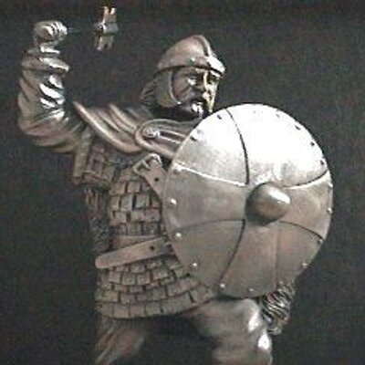

1 Igitur Josue de nocte consurgens movit castra: egredientesque de Setim, venerunt ad Jordanem ipse et omnes filii Israël, et morati sunt ibi tres dies.
2 Quibus evolutis transierunt præcones per castrorum medium,
3 et clamare cœperunt: Quando videritis arcam fœderis Domini Dei vestri, et sacerdotes stirpis Leviticæ portantes eam, vos quoque consurgite, et sequimini præcedentes:
4 sitque inter vos et arcam spatium cubitorum duum millium: ut procul videre possitis, et nosse per quam viam ingrediamini: quia prius non ambulastis per eam: et cavete ne appropinquetis ad arcam.
5 Dixitque Josue ad populum: Sanctificamini: cras enim faciet Dominus inter vos mirabilia.
6 Et ait ad sacerdotes: Tollite arcam fœderis, et præcedite populum. Qui jussa complentes, tulerunt, et ambulaverunt ante eos.
7 Dixitque Dominus ad Josue: Hodie incipiam exaltare te coram omni Israël: ut sciant quod sicut cum Moyse fui, ita et tecum sim.
8 Tu autem præcipe sacerdotibus, qui portant arcam fœderis, et dic eis: Cum ingressi fueritis partem aquæ Jordanis, state in ea.
9 Dixitque Josue ad filios Israël: Accedite huc, et audite verbum Domini Dei vestri.